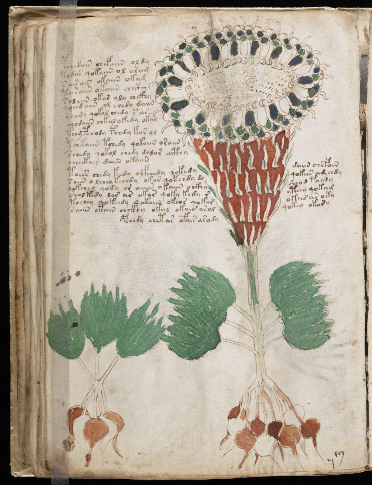

f40v
1pchedain chefaiin oldy2todar qokaiin ol aram3s air ain okaiin okam4taraiin okaiin chckhy5solaiin okar oly chckhy6qoeed aiin ol eeedy daiin7shody qokol chedy s ar8chodaiin chkal ykedy okal9tchy pchody pchdy kor ol10tchkaiin tchedy qokaiin oraiin11schedy qokol chedy dalor aithy12ycheekeey daiin okaiin13toees chedy kedy olfchedy qokedydaiin chefain14saiin o lchey kchedy okar qokchdy dyqokees am chdy15qokchey qody or aiiin okaiin o ckhysheod faimy16shol kedy lor ar okar qoky kedy ryteey qokaim17tochey qokeedy qokaiin okeor qokarokees ar oky18saiin otain chckhy okal okair arolqokey okary19pchedy chetar ofair arody
